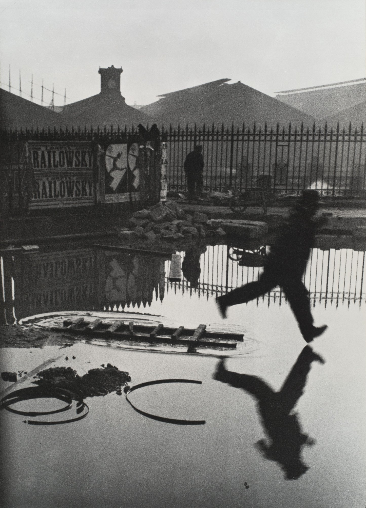
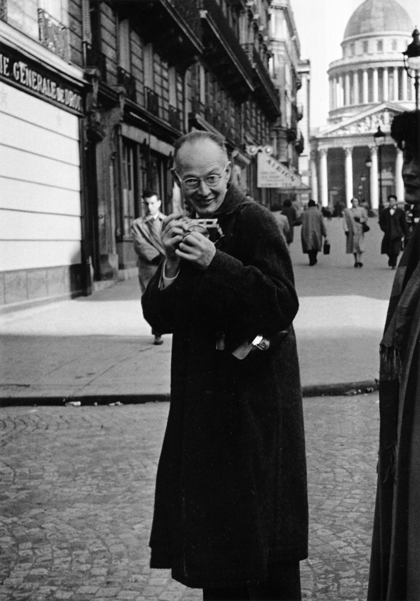
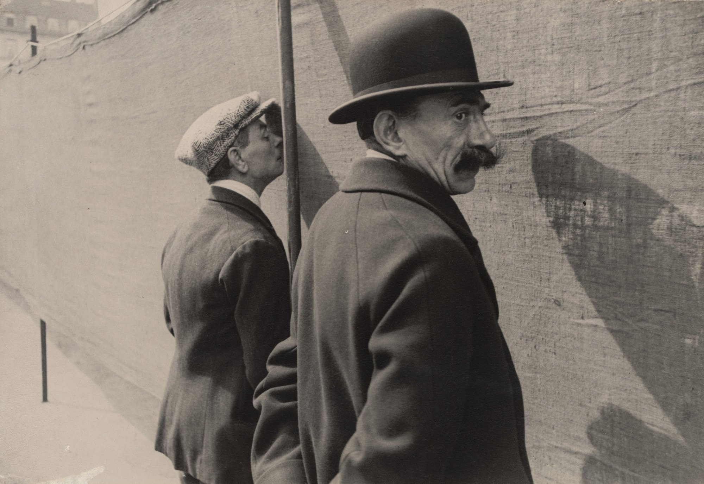
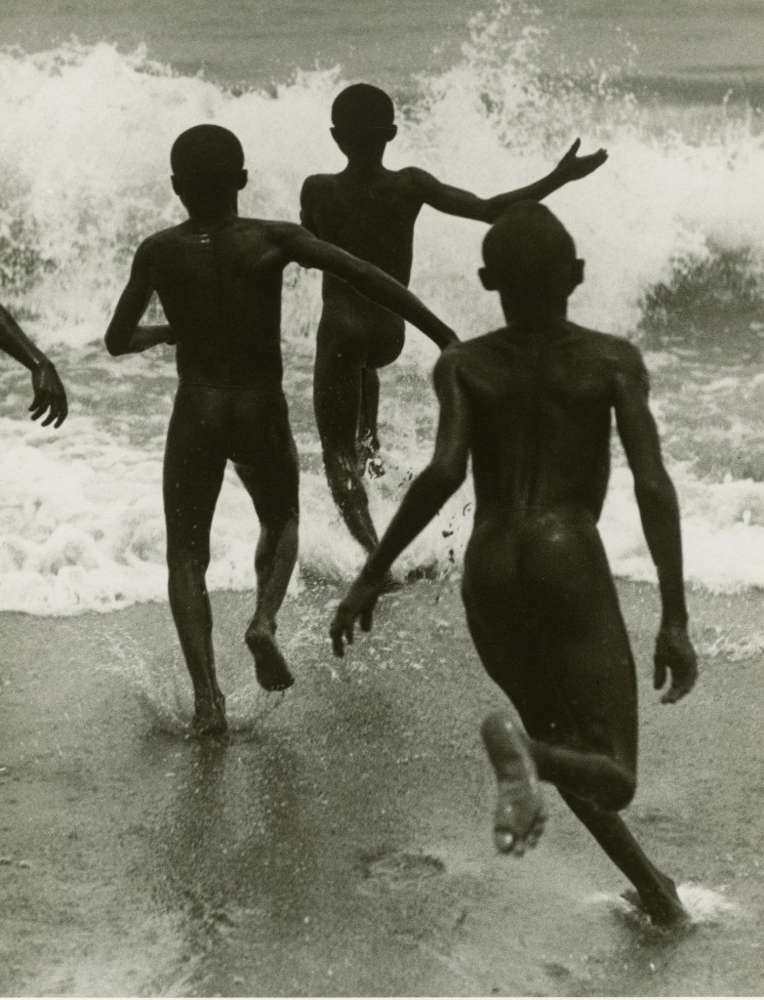
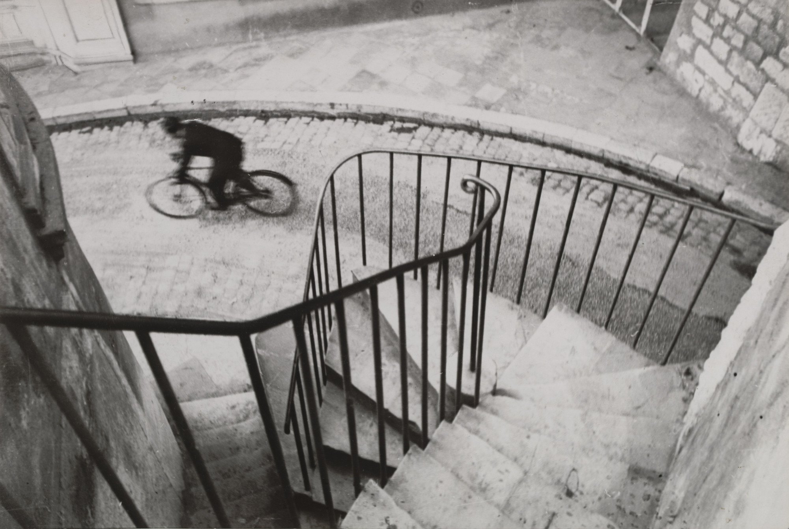
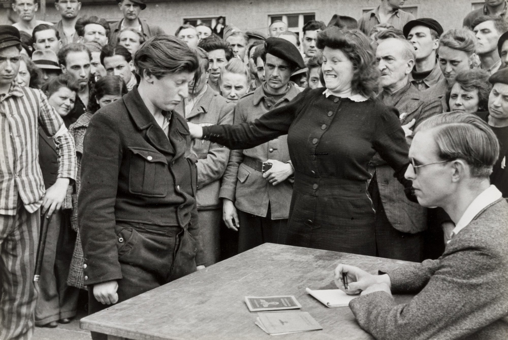
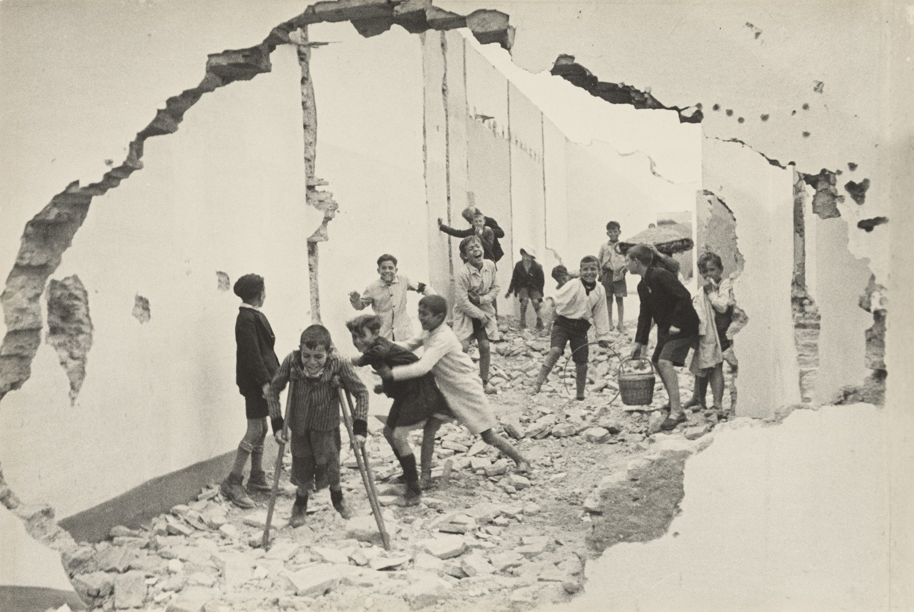
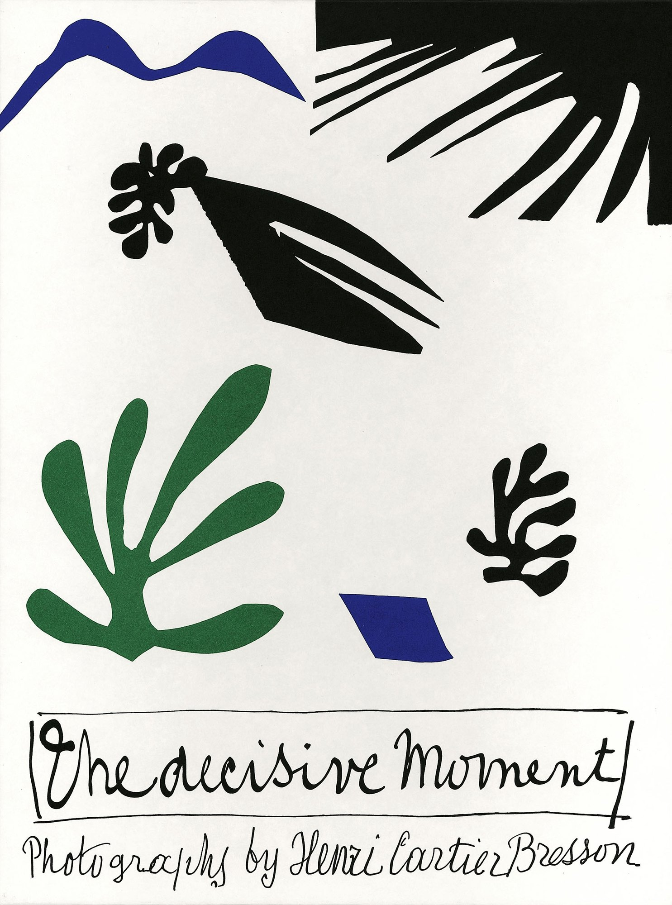

ART 205 · Digital Photography · Photographer Presentation
HenriCartier-Bressonthe eye of the century
press → to begin
Hold your breath.

94
years in the air.
He never lands.
Behind the Gare Saint-Lazare · Paris, 1932 · © Henri Cartier-Bresson / Magnum Photos
1908 — 2004 · France
Henri
Cartier-Bresson
Painter first. Photographer by accident. Co-founder of Magnum Photos. The man who gave photography its most famous idea: the decisive moment.

Three voices · 15 minutes
The life. The rules. The moment.
The life
Painting, Surrealism, one photograph that changed everything, war, and Magnum.
The work & the rules
The Leica, the rules he never broke, and a contact sheet of his greatest pictures.
The philosophy & one photo
"The decisive moment", the critics, and a close reading of the puddle jump.
Origins · 1908 – 1928
Before the camera,
the line.
Born into a wealthy textile family — "Cartier-Bresson thread" was in every French sewing kit. Money gave him one thing: freedom.
At 18 he entered the studio of the Cubist painter André Lhote. Lhote taught him geometry: the golden section, balance, proportion. "For me he represented Cubism."
1928–29: Cambridge — literature and painting. He came back bilingual, and still a painter.

Influence · Surrealism
Chance is
the teacher.
In the late 1920s he sat in the cafés of André Breton's Surrealist circle. Their lesson: walk the street, trust the unconscious, wait for the strange coincidence.
Look at Brussels, 1932: two men, one peeking, one watching us. Humour, mystery, no explanation. Pure Surrealism — with a camera.
The turning point · 1931
One photograph
changed his life.
1930–31: a year in the Ivory Coast, hunting; he nearly died of fever. Back in France he saw this picture by Martin Munkácsi: three boys running into Lake Tanganyika.
"I suddenly understood that photography can fix eternity in a moment."
Henri Cartier-Bresson
1932: he bought a Leica. He put the brushes down for forty years.


Early work · 1932 – 1935
The painter's eye,
at 1/100 s.
Hyères, 1932. The staircase curls like a spiral; the cyclist is a blur of motion. Lhote's geometry + Surrealist chance = a new kind of picture.
He travelled France, Spain, Italy, Mexico. 1933: first solo show, Julien Levy Gallery, New York. 1935: exhibition with Álvarez Bravo in Mexico City. He was 27.
Cinema & war · 1936 – 1946
Declared dead.
Came back.
1936–39: assistant to film director Jean Renoir. 1940: captured by the Germans — 35 months as a prisoner of war. Escaped on his third attempt, 1943.
1945, Dessau: a Gestapo informer is recognised by a woman she denounced. One frame, and the whole war is in it.
1947: MoMA New York planned a posthumous exhibition. They thought he had died in the war. He showed up to the opening.

Magnum & the world · 1947 – 2004
The eye of the century.
1947: he co-founds Magnum Photos with Robert Capa, "Chim" Seymour, George Rodger and William Vandivert. He takes Asia — and is there when history happens.
Part two · Shun
The work
& the rules.
How he shot — and what he shot.
Techniques · six rules
Less equipment, more eye.
One Leica, one 50 mm
click to flipA small 35 mm rangefinder with a "normal" lens — the same angle as the human eye. He wrapped the shiny chrome in black tape so nobody noticed him.
Britannica · Fondation HCB · Wikipedia (Van Riper, 2002)No flash. Ever.
click to flip"Impolite… like coming to a concert with a pistol in your hand." Only available light — so exposure depends on reading the scene fast.
HCB, quoted by F. Van Riper, Washington Post 2002No cropping
click to flip"If you start cutting or cropping a good photograph, it means death to the geometrically correct interplay of proportions." The black border on his prints proves the full frame.
The Decisive Moment, 1952 prefaceNo darkroom
click to flipAfter 1950 a Paris lab made virtually all his prints. He wanted his energy in the street, not in chemicals. The picture was finished when the shutter closed.
Art Institute of ChicagoBlack & white
click to flipAlmost never colour. Without colour you see what he saw: light, line, shape, texture, tonal contrast.
AP / NBC News obituary, 2004Geometry first
click to flip"The only pair of compasses at the photographer's disposal is his own pair of eyes." Find the structure — then wait for life to enter it.
The Decisive Moment, 1952 preface
Composition study · Seville, 1933
Children in the ruins
The body of work · 1933 – 1969 · click a frame
A contact sheet of the 20th century.
A curator's map · Clément Chéroux, Centre Pompidou, 2014
"Not one, but several Cartier-Bressons."
The Surrealist
Chance, dreams, geometry. Hyères, Seville, Brussels. Pictures with no story — only mystery and form.
The engaged witness
Communist newspapers, Renoir's films, the Coronation crowd, the war, Dessau. The camera turns political.
The Magnum eye · then the contemplative
Gandhi, China, Moscow, Paris streets. Later: quiet landscapes, portraits — and a return to drawing.
Part three · Andy
The decisive
moment.
A philosophy — and one photograph, up close.
Artist statement · 1952
Images
on the sly.
His book Images à la sauvette — "images taken on the sly", like a street seller ready to run from the police. 126 photographs, cover by Matisse.
The American publisher wanted a stronger title. He picked a line from the epigraph, a 17th-century cardinal: "There is nothing in this world that does not have a decisive moment."
The English title became the most famous idea in photography.

To me, photography is the simultaneous recognition, in a fraction of a second, of the significance of an event as well as of a precise organization of forms which give that event its proper expression.
Henri Cartier-Bresson · The Decisive Moment, 1952
Meaning
Something is happening — a jump, a look, a gesture. The significance of the event.
Geometry
At the same instant, the forms fall into place — line, balance, rhythm. The organization of forms.
In his own words · 1973 · 90 seconds
If the network fails: read the quotes on the next slide instead.
Interviews · 1979 – 2000
Looking is everything.
Photographing is nothing. Looking is everything.
I don't take the photograph. The photograph takes me.
Photography is not a meditation. It's something intuitive. Drawing is a form of meditation.
Late in life he wrote in a friend's copy of the book: "The More or Less Decisive Moments." He never took his own myth too seriously.
What the art world says
Critics & curators
The decisive part of Cartier-Bresson's particular process takes place not in the mechanism in his hand but in the vision in his head.
He was one of the most talented photographers ever at making very clear, simple pictures, classically organized, almost like a painting from the 17th century.
You will be labelled the little surrealist photographer… Continue on your way, but with the label of photojournalist, and keep the rest deep in your heart.
Only one man had the discerning eye and the lightning reflexes to capture again and again and again what he called "the decisive moment".
One photo, up close · 1932
Behind the Gare Saint-Lazare
The decisive moment is not luck.
It is being ready when luck arrives.
Our reading of Behind the Gare Saint-Lazare
He's still in the air.
Thank you · Marco · Shun · Andy · ART 205 · questions?
Resources
Sources & image credits
Primary · artist statements & interviews
Cartier-Bresson, H. Images à la sauvette / The Decisive Moment. Paris: Verve; New York: Simon & Schuster, 1952. Facsimile: Steidl, 2014 (essay by C. Chéroux).
Cartier-Bresson, H. The Mind's Eye: Writings on Photography and Photographers. New York: Aperture, 1999.
Nuridsany, M. "The Moment That Counts: An Interview with Henri Cartier-Bresson." The New York Review of Books, 2 Mar 1995.
Charlie Rose, interview with Henri Cartier-Bresson, Paris, aired 6 Jul 2000. charlierose.com/videos/19739
Wikiquote, sourced quotations (Le Figaro Magazine 1989; Photo Magazine 1979; Le Monde 1974).
Books · critics & curators
Kirstein, L. & Newhall, B. The Photographs of Henri Cartier-Bresson. New York: MoMA, 1947.
Galassi, P. Henri Cartier-Bresson: The Modern Century. New York: MoMA, 2010. + MoMA audio guide (moma.org/audio/playlist/244).
Chéroux, C. Henri Cartier-Bresson: Here and Now. London: Thames & Hudson, 2014; Centre Pompidou press kit, 2014.
Assouline, P. Henri Cartier-Bresson: A Biography (L'œil du siècle). London: Thames & Hudson, 2005.
Wood, G. "Nothing to Do with Me." London Review of Books 36/11, 2014.
Museums, foundation & agency
Fondation Henri Cartier-Bresson, biography & chronology: henricartierbresson.org/en/hcb/biography
Magnum Photos, photographer profile: magnumphotos.com/photographer/henri-cartier-bresson
MoMA, collection pages: Behind the Gare St. Lazare (98333), Hyères (44586), Seville (52648) and others; exhibition 1947 (#2703) and 2010 (#967).
Art Institute of Chicago, "Cartier-Bresson: Prints" (archive.artic.edu/cartier-bresson/prints).
Britannica, "Henri Cartier-Bresson"; Wikipedia, "Henri Cartier-Bresson", "Behind the Gare Saint-Lazare", "Gold Rush, Shanghai".
Press & obituaries
Kimmelman, M. "Henri Cartier-Bresson, Artist Who Used Lens, Dies at 95." The New York Times, 5 Aug 2004.
Jones, M. "An Eye Without Equal." Newsweek, Aug 2004. · AP, obituary, 4 Aug 2004 (NBC News).
Van Riper, F. "Cartier-Bresson: The Eye of the Century." The Washington Post (Camera Works), 2002.
Ladd, J. "The Return of Henri Cartier-Bresson's Decisive Moment." TIME, Dec 2014. · Palumbo, J. Artsy, 2020. · PBS NewsHour, interview with P. Galassi, 18 May 2010.
Video
The Decisive Moment (ICP / Scholastic, 1973), narrated by HCB — YouTube dlUWznm1ufU · 14ih3WgeOLs. · Henri Cartier-Bresson: The Impassioned Eye (H. Bütler, 2003). · Pen, Brush and Camera (BBC Arena, 1998).
Images
All photographs © Henri Cartier-Bresson / Magnum Photos / Fondation HCB, reproduced from MoMA, Fondation HCB and NGV Melbourne collection pages for educational use only. Portrait of HCB: Ihei Kimura, 1954 (public domain, Wikimedia Commons). Three Boys at Lake Tanganyika © Estate of Martin Munkácsi. Book cover © Succession H. Matisse.